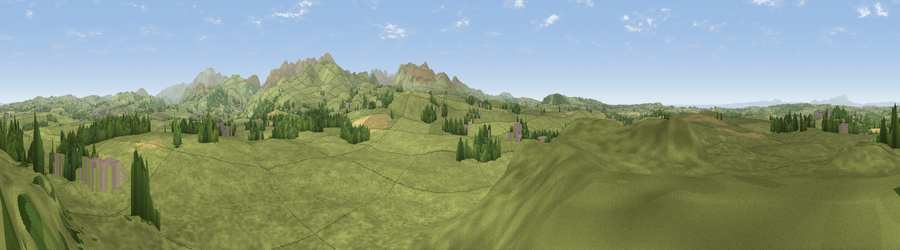

Crag Hills
#11020 in England · top 57% of its area beats it · near DeanscalesThe view, rendered

A 360° render of this exact spot computed from the terrain model, tree cover and land cover — summer colours, afternoon light, calibrated against photographs of famous viewpoints. Real trees, hedges and buildings will differ in detail.
The panorama
Grey silhouette: terrain skyline in each direction (720 bearings, Earth curvature and refraction included). Dashed green: skyline with trees (+15 m) and buildings (+8 m) as obstacles. Blue strip: how far the ground is visible on each bearing.
Where the view opens
Wedge length = distance to the farthest visible ground on that bearing (vegetation-aware). Rings at 10, 25 and 50 km.
What fills the view
91% grassland · 6% woodland · 2% cropland ·
Angular shares of the visible panorama (visual magnitude), not map area. Landscape diversity 0.17 (0–1 Shannon).
Key numbers
More beautiful places nearby
The staircase of upgrades: each row has a higher view potential than everything closer. Driving times are estimates from straight-line distance, calibrated against real road routing — check an actual route before setting out.
| Place | Direction | Drive | Score |
|---|---|---|---|
| Pardshaw Crag | SSE · 2 km | ~4 min | 67.0 |
| Viewpoint near Lorton | ESE · 4 km | ~9 min | 72.0 |
| Whin Fell | ESE · 4 km | ~9 min | 76.9 |
| Viewpoint near Loweswater | SE · 6 km | ~12 min | 83.1 |
| Viewpoint near Loweswater | SSE · 7 km | ~14 min | 85.5 |
| Blake Fell | S · 8 km | ~15 min | 86.9 |
| Crag Fell | S · 13 km | ~23 min | 89.1 |
| Ullock Pike | E · 15 km | ~26 min | 89.4 |
54.63116, -3.39919 · source: osm peak · position refined by local search. Computed location — check access rights before visiting.